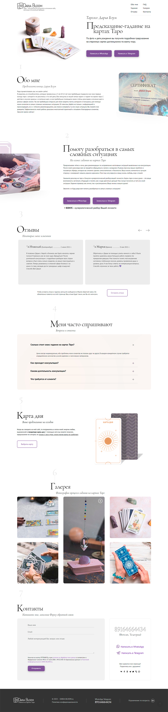
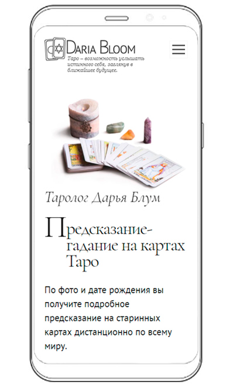
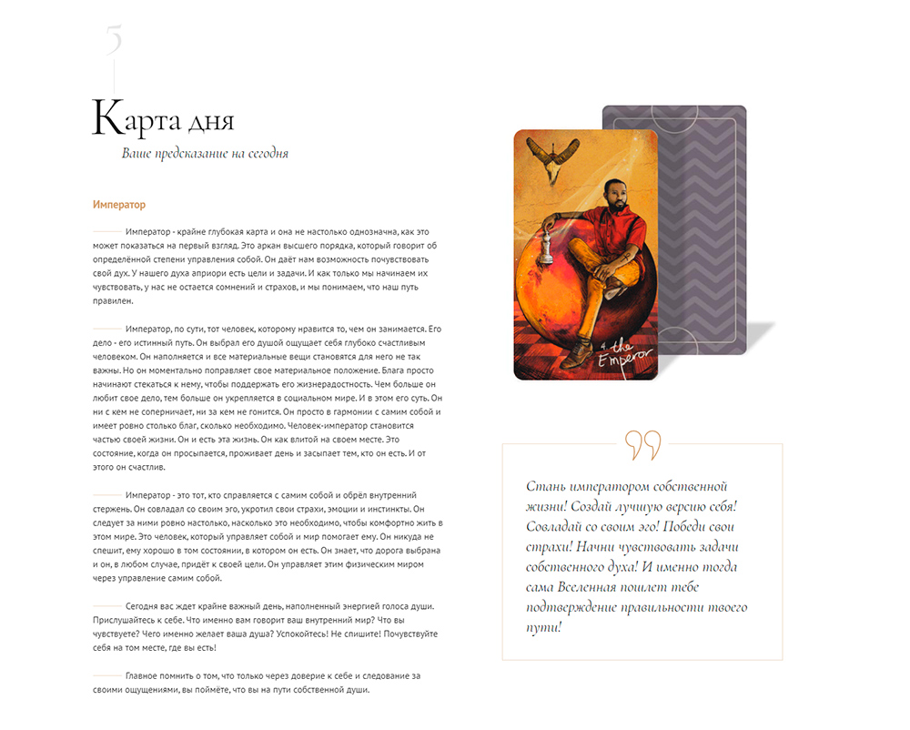
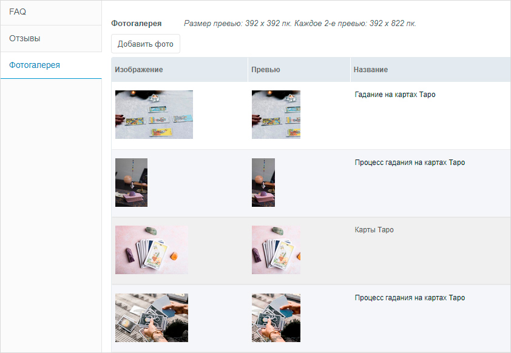

Лендинг: Гадание на картах Таро (Pug, Scss, JavaScript, MODx)
Секции страницы:
- Интро: краткое описание услуги.
- Обо мне: текст и сертификат.
- Услуга: подробное описание услуги.
- Отзывы: карусель.
- FAQ: аккордеон с input type radio.
- Карта дня: вывод рандомной карты таро при нажатии на кнопку Выбрать карту с возможностью сделать это только 1 раз в день (localStorage).
- Галерея изображений.
- Контакты с формой обратной связи (PHP + JavaScript).
Проделанные работы:
- Дизайн: создание в Photoshop, отрисовка графики, фонов и фавиконки.
- Верстка осуществлялась с использованием шаблонизаторов Pug и SASS. Сборка проекта выполнялась с помощью бандлера Webpack. Реализованы: прелоадер, мобильное меню, разные изображения для разных экранов (<picture>), слайдер, аккордеон, галерея, модальные окна.
- Интеграция с cms MODx. Использование MIGX для блоков FAQ, Отзывы и Фотогалерея.
Использованные JS библиотеки:
- Слайдер Splide для отзывов.
- Lightgallery для фотогалереи.
Ссылки
Адрес проекта: Daria-bloom.ru
Скриншоты


Секция Карта дня после нажатия на кнопку Выбрать карту:

Скриншот админки MODx:
